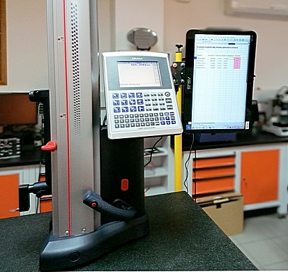
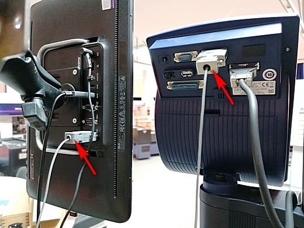
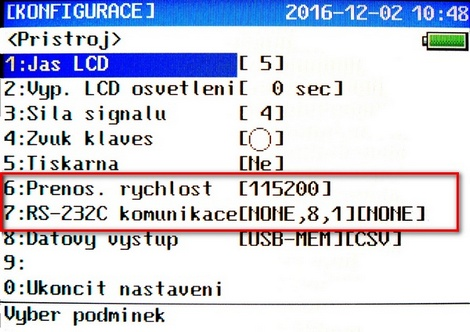
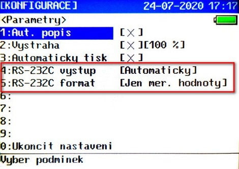

LH-600 data output
LH-600 Height uses for direct data output serial connection through RS-232 only. There not exist USB HID output or DIGIMATIC, which potentially allows using of USB-ITN cable or U-Wave wireless transmitter. Anyway, RS-232 connection is "old, easy and reliable" industrial standard and it is easy to use it with PC.
As a first step, I recommend to realize the connection useing a cable. It is easy to get and easy to configure. You need minimaly 3-wire cable connected as null-modem (crossing Rx, Tx). Thin (3-4 mm diameter) and flexible cable in suficient length (I recommend 5 meter) allows convenient work even by routine measuring.
Small problem should be, that some of current PC and laptops do not have direct RS-232 connector D-SUB9 (male) type. But it ie easy to solve using of RS-232/USB reduction cable, which exist to buy in each computer shop. Recommended is adapter uses of FTDI chips, because driver installation is easy and offten it is realized full automatic by the first adapter connection.
Výškoměr LH-600 má pro přímý výstup dat pouze sériový port RS-232. Výškoměr nemá žádný USB HID ani výstupní DIGIMATIC konektor, který by umožnil např připojení USB-ITN kabelu nebo bezdrátového vysílač U-WAVE. Nicméně připojení pomocí RS-232 je "starý, jednoduchý spolehlivý" průmyslový standard a je snadné ho použít na PC.
Pro první krok doporučujeme realizovat připojení kabelem. Je snadno k sehnání a odpadnou problémy s nastavováním. Je potřeba minimálně 3 žilový kabel zapojený jako null-modem (křížený Rx, Tx). Tenký (3-4 mm) a pružný kebel dostatečné dálky (cca 5m) umožňuje pohodlnou práci i při rutinním měření.
Malý problém může být, že řada současných počítačů již nemá přímý RS-232 konektor typu D-SUB9 (samec). V takovém případě lze ale použít RS-232/USB adaptér, který je snadno dostupný v každém obchodě s počítači. Doporučujeme adaptér s FTDI čipem, neboť instalace ovladače je zde velmi snadná a obvykle proběhna zcela automaticky při prvním použití adaptéru.
 
Good computer for data processing is small all-in-one computer with touch screen.In this case ASUS AiO V161GAT with 14-inch trouch screen, Windows 10 Pro (Mitutoyo order code 63AAA417, price 690 €). This PC has even two RS-232 ports. Connectors for data cable are marked by pointer.
Ideálním počítačem pro zpracování dat je malý all-in-one počítač s dotykovou obrazovkou. V tomto případě ASUS AiO V161GAT se 14 palcovým dotykovým displejem a Windows10 Pro (Mitutoyo objednací kód 63AAA417, cena 690 €). Uvedený PC má rovněž dva RS-232 porty. Šipkou je vyznačeno připojení datového kabelu.
Na výškoměru je třeba nastavit parametry COM portu a parametr výstupu hodnot:
 Na straně PC je třeba přijímat data na příslušném COM portu s parametry odpovídajícím parametrům nastaveným na výškoměru. Příjem dat je možné ověřit pomocí sériového terminálu, například pomocí této jednoduché portable aplikace.
V řadě případů je poždována emulace klávesnice, tedy to, aby data byla vypisována na místo kurzoru, např. do tabulkového programu (např. Excel). V takovém případě je třeba, aby na počítači běžel progrm pro převod dat z COM portu na klávesnicový výstup. Tímto programem může být např jednoduchá robněž portable aplikace v AutoIt skriptu.
Při jejím použití je třea na začátku souboru KeyboardWedge.au3 přepsat komunikační parametry tak, aby odpovídaly aktuální konfiguraci COM portu na daném počítači. Jedná se zejména o řádek
Local Const $iPort = 1
kde 1, je číslo portu, tady COM1.